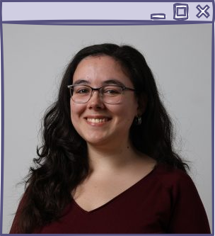

PhD student at LASIGE
Knowledge Graphs
Ontologies
Language
Models


Main skills:
Java
Python
Bash
Data Science
Ontology Matching
Knowledge Graph alignment
Embeddings
Prompt engineering
Retrieval-Augmented Generation
In-Context Learning
OWL/RDF/XML
| I am currently looking for my next project! Contact me at mcdsilva [at] ciencias.ulisboa.pt, if you are looking for someone: |
|---|
| With expertise in knowledge graphs, ontologies, and language models; |
| That can program in Java, Python, and Bash; |
| With a background in the biomedical domain; |
| With experience in data science; |
| That has designed websites and outreach materials. |
I am in the last months of my PhD in Computer Science at LASIGE in the Faculty of Sciences of the University of Lisbon. My thesis is entitled "Holistic Biomedical Knowledge Graph Integration" and my supervisors are Prof. Dr. Catia Pesquita and Prof. Dr. Daniel Faria.
My thesis focused on the alignment of knowledge graphs through ontology matching, advancing the paradigms in holistic ontology matching and complex multi-ontology matching. It originated three main papers: holistic OM, CMOM-RS, and CMOMgen.
Skillset summary
| Education | Programming | Knowledge | Language Models | Organisation | Outreach | Tools |
|---|---|---|---|---|---|---|
| PhD in Computer Science | Java |
Knowledge Graphs | Semantic embeddings | OAEI complex track |
Workshop materials | Matcha |
| MSC in Biochemistry for Health | Python |
Ontologies | Prompt engineering | BRIDges |
Websites | |
| BSc in Applied Chemistry | Bash |
Schema Matching | Retrieval-Augmented Generation | Social media | ||
| HTML/CSS | OWL/RDF/XML | In-Context Learning | ||||
| SQL | ||||||
| SPARQL |
Overview
I have been programming mostly in Java for the last 4 years, but I got my start in Bash and then Python, both of which I use frequently. My career has been focused in the biomedical domain, taking advantage of my BSc in Chemistry and MSC in Biochemistry for Health.
Most of my work as of late has been focused on knoweldge graphs, ontologies, and semantic models. I have developed a knowledge graph for the KATY project and a semantic model for the CancerScan project.
During my PhD I was one of the lead developers of the ontology matching system Matcha, which I have integrated with other tools and participated with in OAEI (2022-2025) (where I also have been an organiser of the complex track for the past 2 years). I also had the opportunity to participate in various research projects
I also have experience in data science: I was responsible for the data processing and integration in both the iRe:Search pilot project for natural sciences and CorkOakDB. I also have a bit of experience with SPARQL (through GraphDB) and SQL (through Tripal), and I have just started to learn R (through RStudio).
Some of my side projects have involved developing metadata models with researchers, such as helping CoastNet with their GeoPortal. Others have involved the development of websites (both simple HTML/CSS and more complex with Drupal/Tripal) and some graphic design work, mostly for social media.
Projects
-
KATY: AI-Empowered Personalised Medicine System to Improve Cancer Treatments (Horizon Europe No 101017453)
- Development of a biomedical knowledge graph with 33 aligned ontologies (Java, Python).
-
iRe:Search pilot: Interdisciplinary Research Data Management Centre at University of Lisbon
- Data integration of multiple biomedical datasets through automated methods (Python, RStudio).
-
CancerScan: Smart pathology slide scanner for diagnosis and patient-specific treatment recommendation in oncology (Horizon Europe No 101186829)
- Development of the semantic data model for a time-aware knowledge graph with partner's data and biomedical ontologies (Python).
-
CorkOakDB: The Cork Oak Genome Portal
- Data processing and development of portal using Drupal and Tripal.
-
HfPT - Health from Portugal (Portuguese PRR No 41)
- Development of glossary alignment algorithms and integration into a service platform.
Main publications
- M.C.Silva; D.Faria; C.Pesquita. (in peer review). Complex Multi-Ontology Alignment via Pattern-Guided In-Context Learning. Submitted to Journal of Web Semantics [pdf]
- M.C.Silva et al. (in peer review). ECKO: Explainable Clinical Knowledge for Oncology. Submitted to Scientific Data [pdf]
- M.C.Silva, D.Faria, C.Pesquita. Complex multi-ontology alignment through geometric operations on language embeddings. 27th European Conference on Artificial Intelligence (2024) [pdf]
- M.C.Silva, D.Faria, C.Pesquita. Matching Multiple Ontologies to Build a Knowledge Graph for Personalized Medicine. 19th Extended Semantic Web Conference (2022) [pdf]
- M.C.Silva, P. Eugénio, D.Faria, C.Pesquita. Ontologies in oncology: a review of semantic technology applications in cancer research. Cancers MDPI (2022) [pdf]
- C.Arias-Baldrich, M.C.Silva et al. CorkOakDB - The Cork Oak Genome Database Portal. Database: The Journal of Biological Databases and Curation (2020) [pdf]